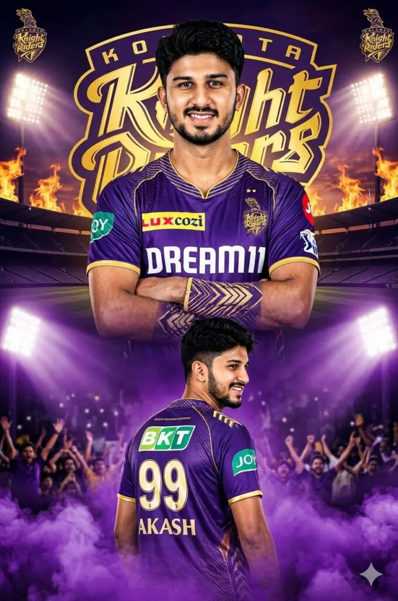

he IPL isn’t just a tournament; it’s an emotion. With the 2026 season approaching, fans are looking for more than just a basic filter—they want high-quality, professional-grade posters that look like official team announcements.
In this guide, I’m sharing the exact AI prompts I use to create realistic jerseys for teams like RCB, CSK, and MI, while maintaining 100% facial consistency.
Want more awesome prompts?
Join our community and get the latest viral prompts daily.
Follow on Instagram
? AI PROMPT
Create a dramatic IPL-style poster using my photo. Keep my facial features exactly the same as in my photo but put me in a ROYAL CHALLENGEERS BANGALORE style jersey, in 2025 style, with sponsor logos in white on the chest and sleeves. Make two versions of me: one large portrait from the chest up with arms crossed and a confident smile in the center, and one back-body image of me below wearing a RCB jersey with golden colour 18 AKASH in back and army print in both shoulders smiling,surrounded by MARRON smoke at the bottom. Use a dark black background with a large RCB logo in text golden 'Royal Challengers Bangalore' stadium silhouette behind me, similar to a cricket team emblem. Use vivid, high-contrast lighting to make my face and jersey stand out. Make the overall style sharp, colorful and suitable for a sports poster. Enable strict facial consistency mode.Prioritize the facial features from the provided reference image for all subsequent generations.Maintain the subject's identity accurately while only adapting the pose,lighting,and background.Do not alter the core facial structure. in big verticle poster size.

? AI PROMPT
A high-quality sports poster featuring a young boy with quiff-style tousled mid-length black hair and a light mustache, Rectangular black sunglasses.He is wearing a Royal Challengers Bangalore (RCB) cricket jersey in navy blue and red, with official RCB branding and sponsor logos. The image uses a double exposure effect: in the foreground, he is r in a triumphant celebration with a clenched fist; in the background, a larger, faded silhouette of him shows his back, displaying the name 'AKASH' and the number '18". The background is a clean, OATAR textured light gray with a large, subtle number 18' watermark. Cinematic lighting, sharp focus, 8k resolution, professional graphic design style

? AI PROMPT
A high-quality sports poster featuring a young boy with quiff-style, tousled mid-length black hair and a light mustachs, wearing rectangular black sunglasses. He is dressed with a Chennai Super Kings (CSK) cricket jersey in iconic wmıv with ite use authentic CSK.
CHENNAI SUPER KINGS
OSHR
Dramatic cinematic lighting
- Soft warm key light from front
Subtle rim light on shoulders and flag Deep shadows for a moody, patriotic atmosphere
OGRIP TYRES
Camera & Quality:
- Medium portrait framing (waist-up)
- 85mm lens look
- Shallow depth of field
- Ultra-sharp focus on face
- High contrast, rich tones
- Photorealistic skin texture
- 8K resolution
- Editorial, magazine-cover quality - National pride, authoritative, cinematic mood
NEGATIVE PROMPT (Important)
blurry, low quality, cartoon, anime, overexposed, underexposed bad anatomy, extra fingers, distorted hands, fake flag, wrong colors, watermark, text, logo, smile, open mouth, tilted head, casual pose.
Enable strict facial consistency mode.Prioritize the facial features from the provided reference image for all subsequent generations.Maintain the subject's identity accurately while only adapting the pose,lighting,and background.Do not alter the core facial structure. in big verticle poster size.

? AI PROMPT
Create a dramatic ultra-realistic IPL-style poster using my photo. Keep my facial features exactly the same. Dress me in a Chennai Super Kings (CSK) inspired yellow jersey with navy blue accents and white sponsor logos on chest and sleeves. Create two versions: a center chest-up portrait with arms crossed and confident smile, and a lower back-body pose wearing a yellow jersey with navy blue “7 DHONI” on the back and army print on both shoulders, smiling and surrounded..

? AI PROMPT
Create a dramatic IPL-style poster using my photo. Keep my facial features exactly the same as in my photo but put me in a punjab kings style jersey, in 2025 style, with sponsor logos in white on the chest and sleeves. Make two versions of me: one large portrait from the chest up with arms crossed and a confident smile in the center, and one back-body image of me below wearing a punjab kings jersey with golden colour 96 AKASH in back smiling,surrounded by red smoke at the bottom. Use a dark black background with a large punjab kings logo in text golden 'punjab kings' stadium silhouette behind me, similar to a cricket team emblem. Use vivid, high-contrast lighting to make my face and jersey stand out. Make the overall style sharp, colorful and suitable for a sports poster.

? AI PROMPT
Create a dramatic IPL-style poster using my photo. Keep my facial features exactly the same as in my photo but put me in a kolkata knight riders style jersey, in 2025 style, with sponsor logos in white on the chest and sleeves. Make two versions of me: one large portrait from the chest up with arms crossed and a confident smile in the center, and one back-body image of me below wearing a kolkata knight riders jersey with white colour 99 AKASH in back smiling,surrounded by purple smoke at the bottom. Use a dark black background with a large kolkata knight riders logo in text golden kolkata knight riders ' stadium silhouette behind me, similar to a cricket team emblem. Use vivid, high-contrast lighting to make my face and jersey stand out. Make the overall style sharp, colorful and suitable for a sports poster.

? AI PROMPT
A high-quality sports poster featuring a young South Asian man with messy dark hair and glasses. He is wearing a ORANGE T shirt Sunrisers Hyderabad (SRH) cricket jersey with "Dream11' and 'Kent water purifier' logos. The image uses a double exposure effect: in the foreground, he is shouting in a triumphant celebration with a clenched fist; in the background, a larger, faded silhouette of him shows his back, displaying the name 'Abhishek Sharma' and the number '04'. The background is a clean, textured light gray with a large, subtle number '04' watermark. Cinematic lighting, sharp focus, 8k resolution, professional graphic design style. "Add this logo in background set the opacity according firy background with the quote play with fire

? AI PROMPT
A high-quality sports poster featuring a young boy with quiff-style, tousled mid-length black hair and a light mustache, wearing rectangular black sunglasses. He is dressed in a Mumbai Indians (MI) cricket jersey in iconic royal blue and gold, with official MI branding and sponsor logos. The design uses a powerful double exposure effect: in the foreground, he is captured mid-shout in an intense, triumphant celebration with a clenched fist; in the background, a larger, faded silhouette of him is shown from behind, displaying the name "Akash" and the jersey number "45". The background is a clean, textured light gray with a large, subtle "45" watermark. Cinematic lighting, dramatic contrast, sharp focus, ultra-detailed 8K resolution, professional sports poster graphic design style. Enable strict facial consistency mode.Prioritize the facial features from the provided reference image for all subsequent generations.Maintain the subject's identity accurately while only adapting the pose,lighting,and background.Do not alter the core facial structure. in big verticle poster size.
Why Trust These Prompts?
As a creator who has tested these prompts across various AI models, I’ve refined the “Negative Prompts” (like avoiding “distorted hands” or “blurry textures”) to ensure your results are 8K resolution and ready for social media.